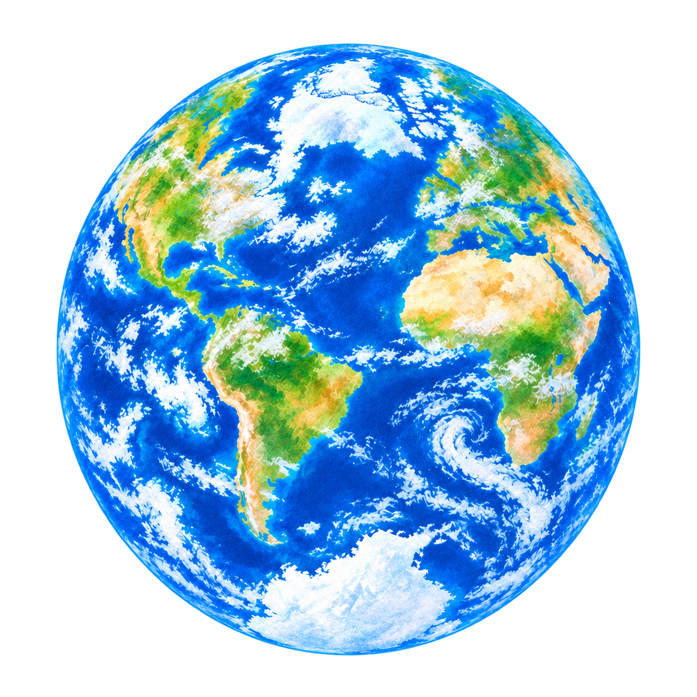

Polo sur · aurora austral
Tu movimiento altera la forma, el color y el ritmo. La cámara no graba ni utiliza micrófono.
El pulso geomagnético
Cómo funciona
El Kp (escala 0–9) mide la energía que el viento solar transfiere al campo magnético terrestre: a mayor energía, más rápido y fuerte late la onda, y el óvalo auroral se expande hacia latitudes menores — por eso la aurora se vuelve visible.
CONSULTANDO NOAA
Kp — · — · — BPM
Energía del pulso: cargando…
Polo sur · movimiento 0%—
Energía del pulso: cargando…
Polo sur · movimiento 0%—
Cámara apagada. El Kp controla la onda.
Toca, arrastra o usa la cámara: la onda responde a ti. Al soltar, vuelve al ritmo real del Kp.